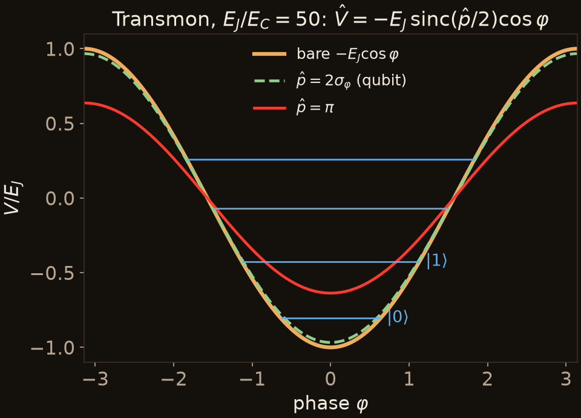

Example 2: a quantum gate
A transmon qubit
$H = 4E_C n^2 - E_J\cos\varphi$, with charge $n$ and phase $\varphi$ conjugate. A cosine averages in closed form:
$$\hat V = -E_J\,\frac{\sin(\hat p/2)}{\hat p/2}\,\cos\varphi$$
- An X gate is a $\pi$-pulse at $\omega_{01}$. It works only because $\omega_{12} \ne \omega_{01}$: at $E_J/E_C = 50$, the anharmonicity is $|\alpha|/\omega_{01} \approx 6\%$.
- The qubit's coherence length is $\hat p \approx 2\sigma_\varphi \approx 0.9$ rad, which softens $E_J$ by $\approx 3\%$.
- $\delta\hat V$ is the same size as the effect the gate relies on. Liouville flow in the bare cosine can't model the gate; flow in $\hat V$ does, exactly.